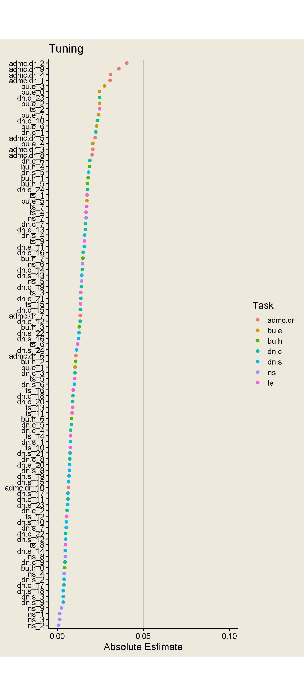

Code
library(tidyverse)
library(tidymodels)
library(finetune)
library(vip)
set_theme(theme_classic(base_size = 16, paper = "#eceadf"))With {xgboost}
Jessica Helmer
June 7, 2026
v5_dat_wide <- v5_dat |>
# condensing denominator neglect scores down to one score per item pair
mutate(.by = c(subject_id, item),
score = ifelse(task == "dn.c" | task == "dn.s",
mean(score),
score)) |>
unique() |>
select(-c(time, task)) |>
pivot_wider(names_from = "item", values_from = "score",
id_cols = c(subject_id, sscore)) |>
# alert alert !!
drop_na(){xgboost}Splitting data into train and test.
Specifying model (S-score predicted by everything else) and normalizing all predictors.
Specifying hyperparameters and which are going to be tuned.
Defining grid of candidate hyperparameter combinations.
# A tibble: 100 × 5
tree_depth min_n mtry sample_size learn_rate
<int> <int> <int> <dbl> <dbl>
1 5 12 18 0.808 0.00266
2 5 32 15 0.833 0.0236
3 5 17 13 0.576 0.0248
4 5 27 6 0.672 0.00443
5 5 9 10 0.899 0.0260
6 5 3 19 0.697 0.0129
7 5 16 29 0.646 0.0343
8 5 21 31 0.859 0.0102
9 5 37 24 0.687 0.00811
10 5 10 26 0.884 0.0413
# ℹ 90 more rowsFive-fold cross-validation for tuning.
Highest-performing hyperparameter combinations
# A tibble: 5 × 11
mtry min_n tree_depth learn_rate sample_size .metric .estimator mean n
<int> <int> <int> <dbl> <dbl> <chr> <chr> <dbl> <int>
1 1 20 8 0.0123 0.924 rmse standard 0.604 5
2 1 10 6 0.00774 0.667 rmse standard 0.606 5
3 3 18 5 0.00559 0.909 rmse standard 0.609 5
4 4 20 7 0.00850 0.510 rmse standard 0.609 5
5 7 2 6 0.00423 0.828 rmse standard 0.610 5
# ℹ 2 more variables: std_err <dbl>, .config <chr>Importance of items
# vis <- extract_workflow(xgb_last) |>
# extract_fit_parsnip() |>
# vi(method = "shap", train = bake(prep(v5_dat_recipe), v5_dat_train))
#
# vis |>
# saveRDS(here::here("Data", "xgboost", "xgb_item-importance.rds"))
#
# vis |>
# slice_max(Importance, n = 100) |>
# mutate(Variable = fct_reorder(Variable, Importance)) |>
# ggplot(aes(x = Importance, y = Variable)) +
# geom_point() +
# theme(aspect.ratio = 4,
# panel.grid.major.x = element_line(linewidth = 0.2))
xgb_fit <- extract_workflow(xgb_last) |> extract_fit_engine()
X <- bake(prep(v5_dat_recipe), v5_dat_train) |> select(-sscore) |> as.matrix()
shp <- shapviz::shapviz(xgb_fit, X_pred = X)
#shapviz::sv_importance(shp, kind = "bar")
item_importance <- shp |>
shapviz::get_shap_values() |>
as_tibble() |>
summarize(across(everything(), \(x) mean(abs(x)))) |>
pivot_longer(everything(), names_to = "Variable", values_to = "Importance") |>
mutate(task = str_split_i(Variable, "_", 1)) |>
mutate(Importance = abs(Importance),
Variable = fct_reorder(Variable, Importance))
item_importance |>
saveRDS(here::here("Data", "xgboost", "xgb_item-importance.rds"))
item_importance |>
ggplot(aes(x = Importance, y = Variable, color = task)) +
geom_point() +
labs(y = NULL, color = "Task", title = "Tuning", x = "Absolute Estimate") +
annotate("segment", x = 0.05, y = -Inf, yend = Inf, alpha = 0.2) +
scale_x_continuous(breaks = c(0, 0.05, 0.1)) +
coord_cartesian(xlim = c(0, 0.1)) +
theme(aspect.ratio = 3)